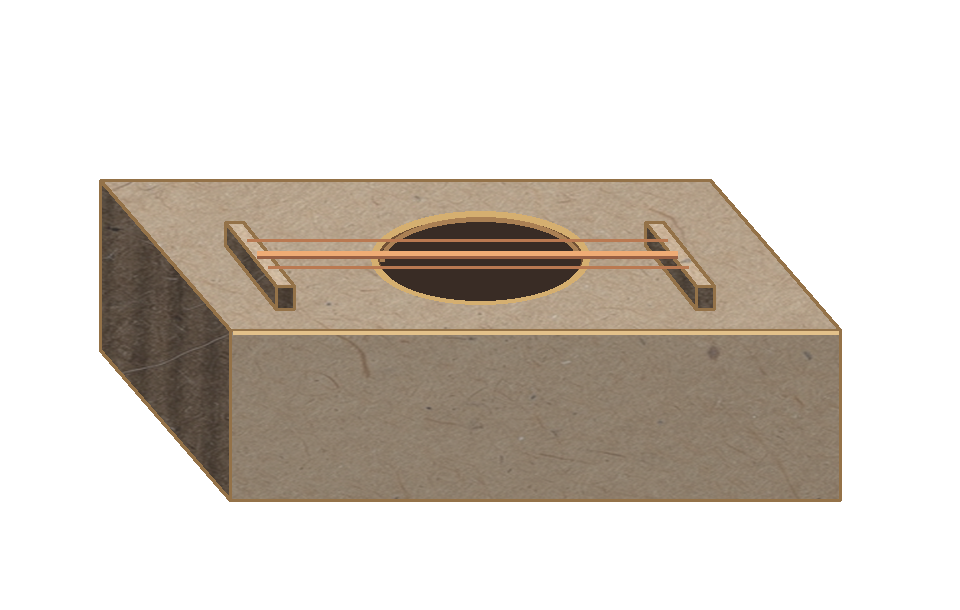
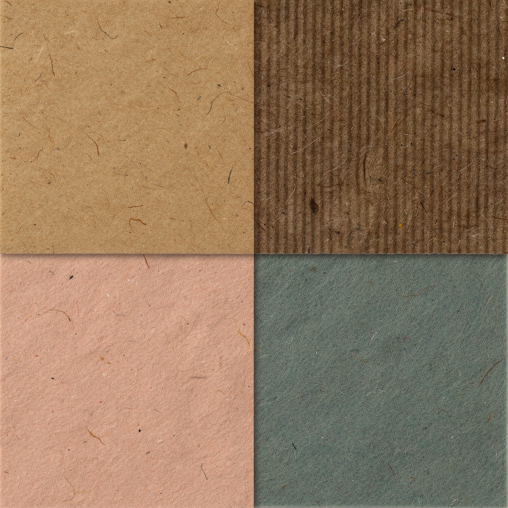
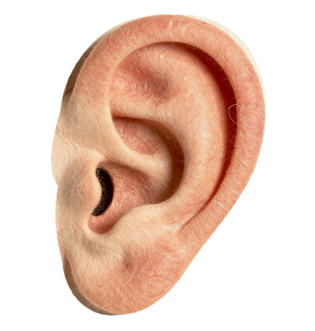

guitar-v3
provisional
Rive prop animation source/runtime pending desktop connection
Local v3 working library. Creative review is pending.

provisional
Rive prop animation source/runtime pending desktop connection

provisional

provisional

provisional-repaired
Native runtime bake checked; owner creative review pending